01
Tu montres ta tenue
Une photo de ta tenue du jour, de ton armoire, ou simplement d'une pièce que tu hésites à porter. C'est tout ce qu'il faut pour démarrer.
Ton styliste personnel du matin
Ton agent IA qui t'aide à t'habiller chaque jour sans stress, sans pub, sans te pousser à acheter.
Une scène universelle
Tu ouvres l'armoire. Tu fixes. Tu pioches un haut. Tu le reposes. Tu prends celui d'à côté. Tu le reposes aussi. Dix minutes plus tard, tu portes encore le même pull que la semaine dernière.
Pas parce que tu manques de vêtements — tu en as plein. Mais parce qu'à 7h12, ton cerveau refuse de choisir. Et c'est complètement normal.
Chaque matin difficile ajoute un stress avant même que la journée commence. Ce n'est pas un problème de vêtements — c'est un problème de charge mentale.
Styleme.fr, c'est l'ami qui répond à ta place.
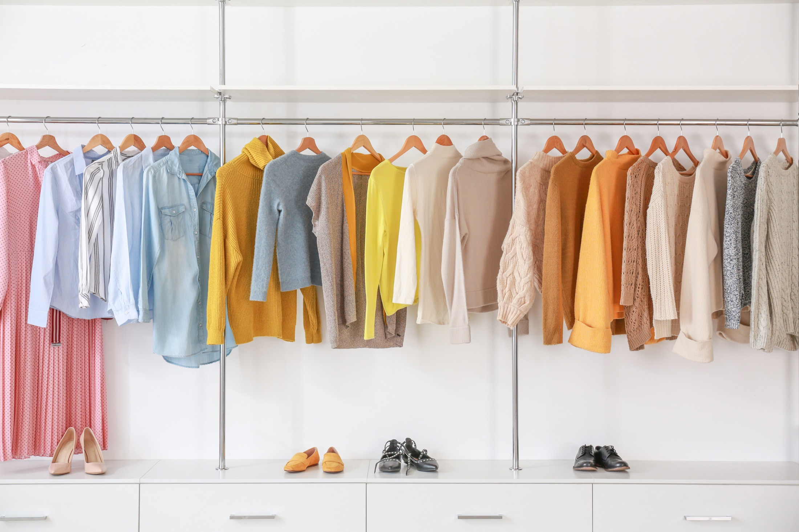
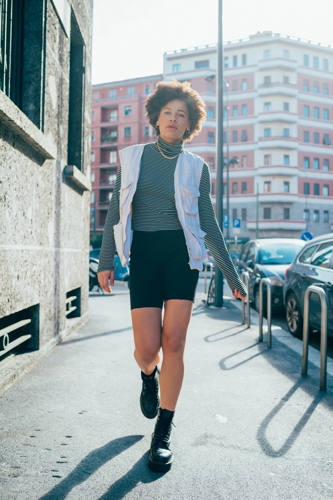
Dressing optimisé
Pas besoin de refaire ta garde-robe. Styleme.fr part de ce que tu as déjà — tes habitudes, tes essentiels, tes pièces marquantes. Ta tenue s'adapte à la météo, au rythme de ta journée, à ton agenda.
Il propose toujours une silhouette stylée et facile à porter. Pas de jugement, pas de pression. Juste la bonne idée, au bon moment.
Ce que ton dressing fait pour toi :
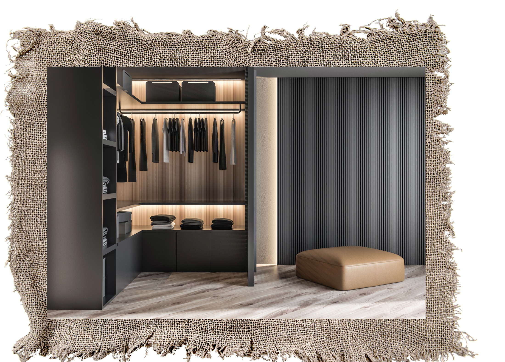

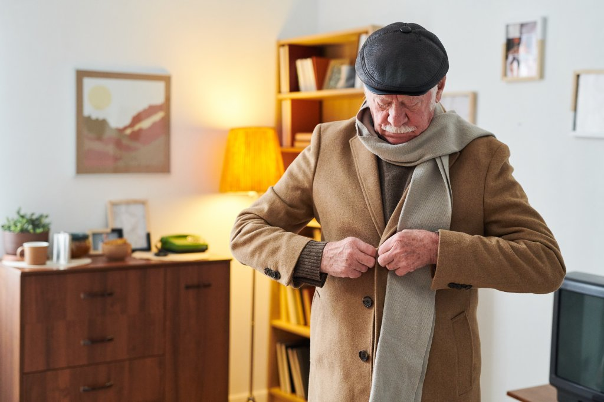
Qui sommes-nous
Avant de sortir, un geste. Boutonner son manteau, ajuster l'écharpe, regarder par la fenêtre.
Styleme.fr commence là — dans le silence du matin, quand on choisit qui l'on sera aujourd'hui.
Pas une appli de plus. Un compagnon discret qui part de ta vraie vie — tes vêtements, ton agenda, la météo, ton humeur — pour te répondre simplement : qu'est-ce que je porte aujourd'hui ?
Comment ça marche
Pas d'application à télécharger, pas de quiz interminable. Ouvre le site, montre ce que tu as devant toi, reçois un avis.
Une photo de ta tenue du jour, de ton armoire, ou simplement d'une pièce que tu hésites à porter. C'est tout ce qu'il faut pour démarrer.

Un avis court, bienveillant, avec un ajustement concret : la couleur qui réveille, la chaussure qui change tout, l'accessoire qui structure.

Au fil du temps, il retient ce que tu aimes, ce que tu portes, ce qui te va. Et ressort les bonnes idées au bon moment.
Ton conseiller, tes règles
Léa, Marco, Mémé Suzanne : c'est ton conseiller mode personnel. Tu choisis comment tu l'appelles, c'est lui (ou elle) qui t'accompagne au quotidien.
Mode particulière, nouveautés saison, occasions spéciales, basics du quotidien… Tu coches les sujets sur lesquels tu veux des conseils. Le reste, on n'en parle pas.
Chaque matin, deux fois par semaine, ou seulement quand tu demandes : c'est toi qui pilotes la fréquence.
Conseil de style
Pas de leçons de mode, pas de jugement. Ton styliste personnel s'adapte à tes goûts, tes humeurs, ton emploi du temps. Il te rassure avant un rendez-vous, t'aide à oser avant une soirée, et reste discret quand tu sais déjà ce que tu veux.
Il évolue avec toi. Plus tu l'utilises, plus ses suggestions deviennent justes.


Pas une appli shopping
Là où les autres veulent te faire acheter, Styleme.fr veut te faire porter. Là où elles t'inondent, on choisit pour toi. La différence se mesure tenue par tenue.
| Les autres apps | Styleme.fr |
|---|---|
| Te montrent 50 tenues par jour. | Te propose 2 ou 3 idées maximum. |
| Veulent que tu achètes. | T'aide avec ce que tu as déjà. |
| Sont remplies de pubs. | Zéro pub. |
| Oublient coiffure et maquillage. | Les intègre progressivement. |
Communauté engagée
Tu n'aimes plus une pièce ? Quelqu'un, quelque part, l'attend. Échange direct, frais minimes, pas de marge, pas de revente déguisée.
On ne propose jamais d'acheter neuf en premier réflexe. Styleme.fr regarde d'abord ce que tu as déjà — et te le fait redécouvrir.
Pas de likes, pas de classement. Juste des regards bienveillants, et des vêtements qui passent de main en main au lieu de finir au fond d'un placard.
Quand l'enfant est chez son autre parent, chez les grands-parents ou en colonie, les parents inscrits avec lui peuvent voir sa tenue du matin. Pas de surveillance — juste un lien doux, à distance.
« Acheter moins, porter mieux, partager plus. »
Rejoindre la tribuSlow fashion
Styleme.fr encourage les associations inattendues, les répétitions intelligentes, les pièces qui durent. L'idée n'est pas de t'empêcher d'acheter, mais de te faire redécouvrir ce que tu as déjà.
Une garde-robe respectée, c'est une planète moins essoufflée.
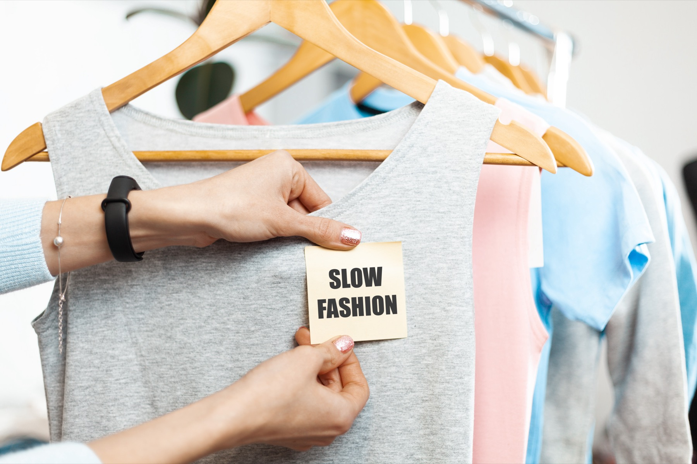
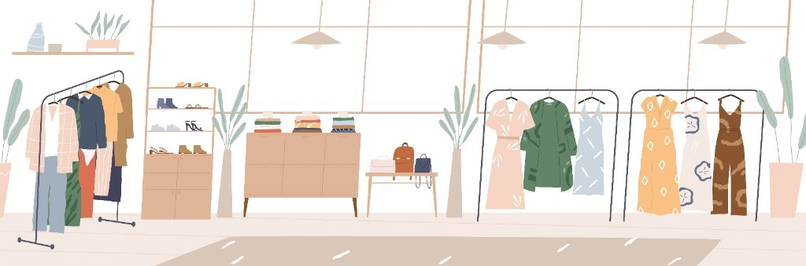
Questions fréquentes
La bêta est gratuite. Ensuite, un petit abonnement mensuel abordable, avec une version gratuite qui reste disponible.
Oui. Tes photos restent privées, ne sont pas partagées avec des marques, et tu peux les supprimer à tout moment, en un geste.
Non. Commence avec une seule photo de ta tenue du jour. Le dressing se construit naturellement, au fil des matins.
Non. C'est un site web accessible depuis ton téléphone ou ton ordinateur. Rien à installer.
C'est prévu, progressivement. Les premiers testeurs nous diront exactement ce dont ils ont besoin.
Oui, Styleme.fr™ fonctionne pour tous les adultes, quels que soient ton style, ton genre ou tes goûts : ton styliste personnel s'adapte à toi.
L'univers Styleme
De la rue au dressing, du matin tranquille à l'after-work, Styleme.fr s'écrit dans les gestes, les saisons et les sourires.
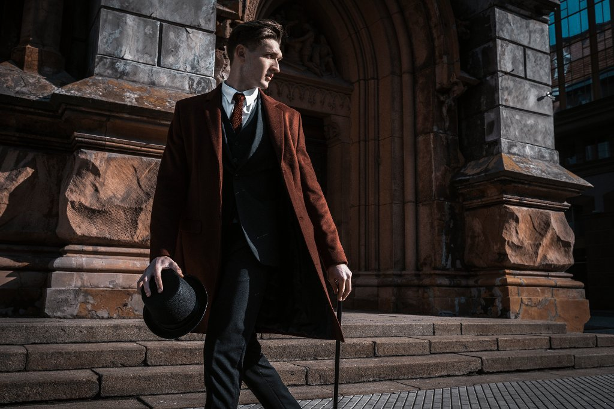
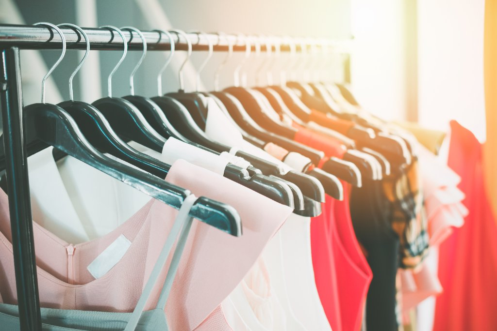
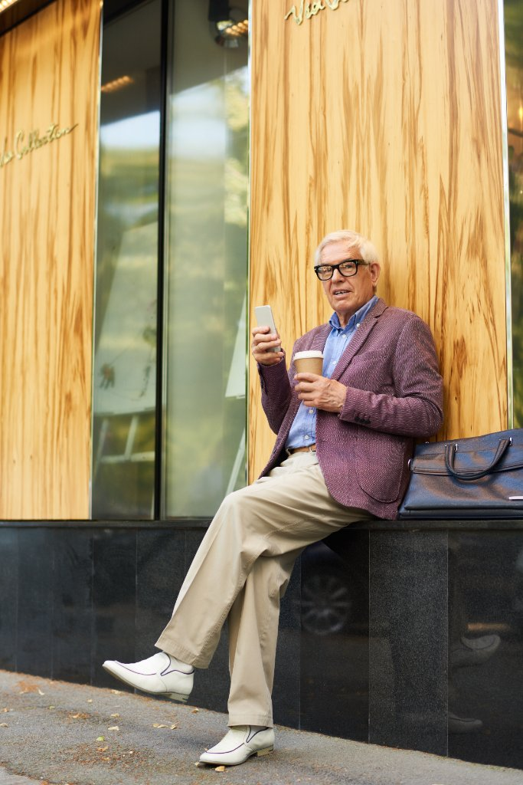
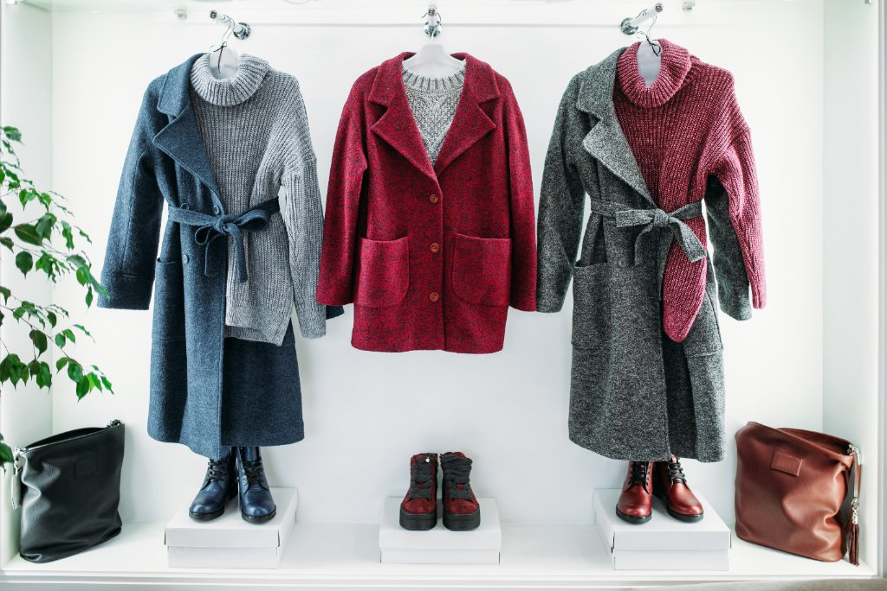
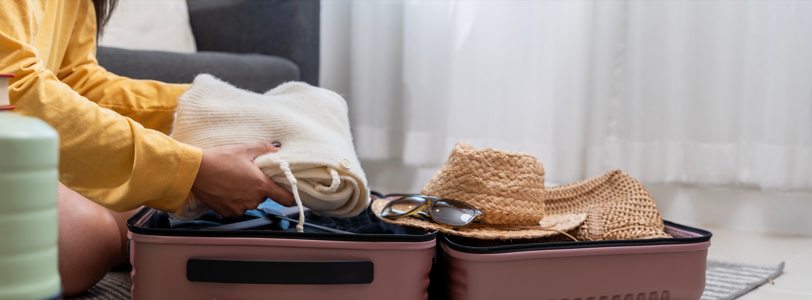
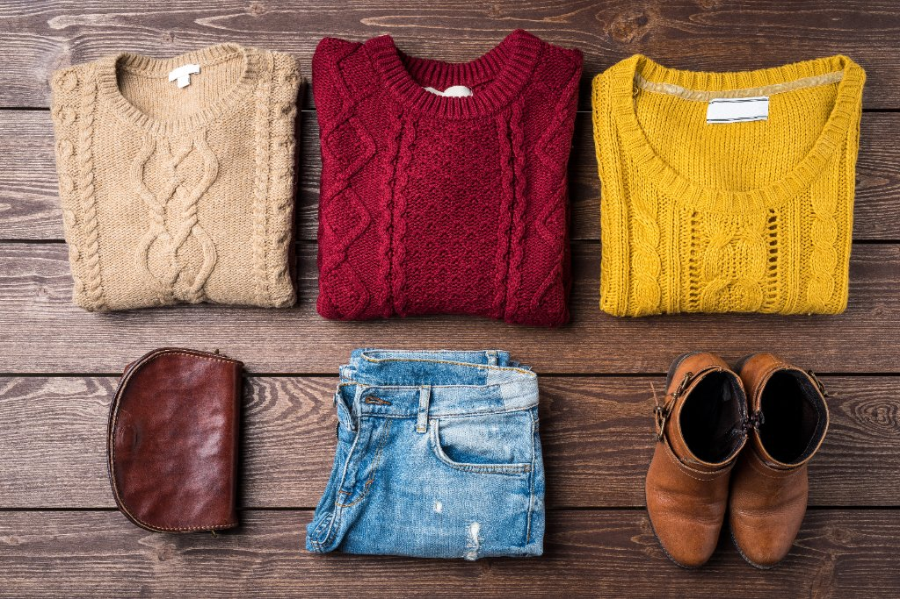
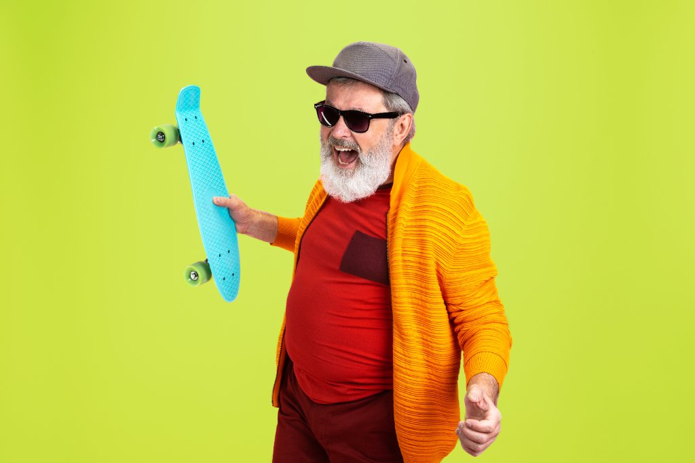
Accès en avant-première
Laisse ton e-mail et quelques mots sur ton besoin style du moment.
Pas de spam. Juste une réponse quand le test ouvre.